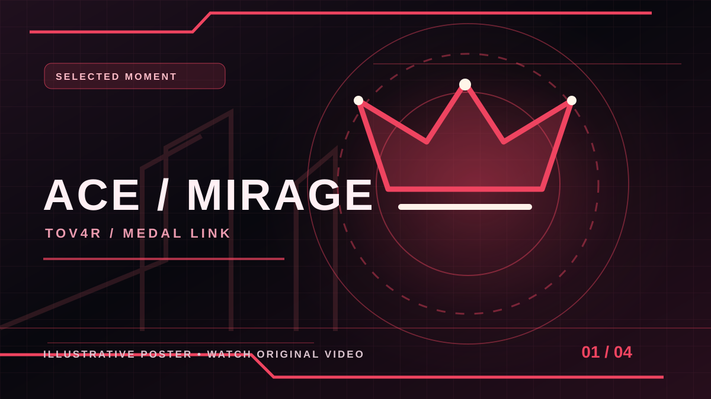
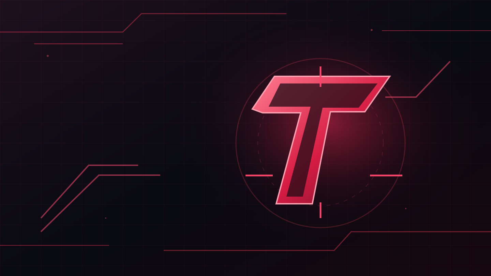

GAMING PORTFOLIO
TOV4R
MORE THAN JUST A GAME
Je suis Tov4r, un gamer passionné par la performance, les jeux et la technologie. Bienvenue sur mon portfolio Gaming !
BETTER
GEAR
BIGGER
DREAMS
GEAR
BIGGER
DREAMS
SCROLL
TOV4R / ON YOUR PHONE
Pin this gaming portfolio to your home screen. Works as a lightweight web app on supported browsers.
FEATURED CLIP OF THE WEEK
CURATED WEEKLY ROTATION · EXISTING MEDAL CLIPS
CURATED MEDAL SPOTLIGHT
MIRAGE / LINKED MEDAL CLIP
MIRAGE / LINKED MEDAL CLIP
WEEKLY WEBSITE PICK · NOT A LIVE GAME STATISTIC
ACE — MIRAGE
A rotating showcase selected from the four Medal clips already linked in this portfolio. The selection rotates each Monday (UTC); it does not imply a recent recording, an award, or a match result.
Original Medal video may require opening on Medal if embedding is blocked.MEDAL · IN-PAGE VIDEO PLAYER
If Medal doesn't permit embedding, use OPEN MEDAL to watch the original clip.
MY GAMES
THE GAMES I PLAY
VALORANT
TACTICAL FPS
CS2
COMPETITIVE FPS
MINECRAFT
SANDBOX / SURVIVALREDLINE VISUAL BOARD
GAMING ATMOSPHERE · TOV4R STYLEA black-and-crimson inspiration board to match the site identity. These are illustrative gaming-space photos and original artwork, not photos of my personal setup.
 01 / AMBIENT
01 / AMBIENT
 02 / STATION
02 / STATION

03 / ORIGINALPhoto inspiration: Unsplash License. All four Medal clip graphics are original illustrations; use the PLAY controls to see the actual videos.
CS2 HIGHLIGHTS
THE PLAYS · THE MOMENTS · THE GRIND CLIPPED ON MEDAL
Best moments from TOV4R on Counter-Strike 2. Discover the clips, then watch the full gameplay on Medal.
4 / 4 CLIPS SHOWN
Real gaming photography for visual atmosphere, not actual video frames, game inventories or personal hardware. Unsplash License · Gaming desk photo source ↗
01 / FEATURED
 MIRAGE
MIRAGE
MIRAGE
Ace — MirageThe ace moment
02 / PRECISION
 MIRAGE
MIRAGE
MIRAGE
2K — MirageDouble one-tap
03 / MOMENT
 MIRAGE
MIRAGE
MIRAGE
Headshot — MirageHighlight clip
04 / HIGHLIGHT
 DUST II
DUST II
DUST II
3K — Dust IITriple elimination
PLAY FEATURED ACE — MIRAGE HERE IN-SITE VIDEO PLAYER
If the embedded player is unavailable, watch the original on Medal ↗.
TOV4R // COUNTER-STRIKE 2 // SELECTED CLIPS
TOV4R CLIP MANAGER
PUBLIC MEDAL COLLECTION · LOCAL DRAFT WORKSPACEDiscover published Medal links. Build a private clip draft on this device, pick a featured video, then export a GitHub-ready file. No fake admin login or hidden backend.

PUBLISHED MEDAL COLLECTIONOPEN MEDAL PROFILE ↗
For existing clips, use the Highlights section above.
Les images de cette collection sont de vraies photographies d'ambiance gaming sous licence Unsplash, et non des images extraites de tes vidéos. Pour voir le vrai gameplay, ouvre Medal.
CLIP MANAGER — EDIT A PRIVATE DRAFT +
Changes here are visible only in this browser. They cannot update the live site until you export tov4r-clips.js and commit it to assets/tov4r-clips.js on GitHub. This editor does not verify that you own any clip.
Public clips are read from the repository. Drafts stay local.
CS2 PLAYER DASHBOARD
YOUR GAME · YOUR LINKS · YOUR HIGHLIGHTS TOV4R // CS2 & GAMING
TOV4R // CS2 & GAMINGREAL GAMING DESK PHOTO · ILLUSTRATION ONLY · NO CLAIM OF OWNED EQUIPMENT
PLAYER PROFILE / 01STEAM ↗Open the original CS2-connected Steam profile
COMPETITIVE / 02XPLAY.GG ↗See account information from the source
HIGHLIGHTS / 03MEDAL.TV ↗Discover more clips on the official player page
External links show the source profiles. Figures below are dated snapshots, not live API statistics.
COUNTER-STRIKE 2 // PLAYER
TOV4R
Practice. Compete. Play with friends.
MOST PLAYED: XPLAY.GG & FRIEND MATCHES
XPLAY TIME57hPUBLIC PROFILE · 09 NOV 2026
XPLAY MEMBER SINCE10.07.2026PLAYER NAME: FLIX

01 / MAINXPLAY.GG
Community matches & practice
02 / MAINWITH FRIENDS
Private and friendly matches
03 / ALSOCOMPETITIVE
CS2 matchmaking
CS2 SETTINGS
TOV4R SIGNATURE / STARTER CONCEPTTOV4R SIGNATURE · V1
My suggested starter preset for the TOV4R look. These numbers are ideas to try, not verified settings from my account. Adjust them for your comfort and display.
The crosshair appears over a real gaming desk photograph. The demo does not depict actual gameplay.
STARTER PRESET
MY DESIGN IDEA · NOT VERIFIEDMOUSE DPI800 · CONCEPT
IN-GAME SENS1.20 · CONCEPT
RESOLUTION1280 × 960 · 4:3 IDEA
SHARE CODENO VERIFIED CODE
PERSONAL CROSSHAIR CODE
NOT PROVIDED800 DPI / 1.20 sens / 1280 × 960 are sample starting points I chose, not a claim about the player’s real game. The import-code button stays disabled until an authentic code is supplied.
CROSSHAIR STUDIO V2
RED × BLACK / LIVE DEMOREDLINE V1 · VISUAL DEMO ONLY
Try the red-line style and customize the preview freely. It is a visual concept; the lab does not generate a real CS2 share code.
LIVE PRESETS & YOUR LOCAL WORKSPACE
Pick a preset or fine-tune the sliders above. All presets are illustrative — none claim to be your real CS2 settings.
Visual preview only · no official CS2 share code or account changes.
CS2 LOADOUT
SHADOW / CRIMSON DESIGN CONCEPTREDLINE // CONCEPT COLLECTION
A black-and-red style moodboard I designed for TOV4R. These are creative themes, not owned CS2 items or official game cosmetics.
Real gaming hardware imagery provides a visual theme; no official CS2 inventory or owned cosmetics are implied.
01 / STYLEAGENT
AGENT STYLE
CT / SHADOW CONCEPTVIEW SLOT
CT-style stealth moodboard. Not an in-game agent or ownership claim.
02 / STYLEGLOVES
GLOVE PALETTE
GRAPHITE × CRIMSONVIEW SLOT
Graphite and crimson as a visual theme; not a claimed glove skin.
03 / SOUNDMUSIC
SIGNATURE SOUND
LEVEL UP · SITE THEMEVIEW SLOT
Based on this site’s own Level Up soundtrack, not a CS2 music kit.
04 / PROFILEBADGE
PLAYER EMBLEM
TOV4R / 04 · CONCEPTVIEW SLOT
An original TOV4R / 04 graphic concept, not a game badge.
TOV4R // CONCEPT SHOWCASE ONLY // NO CLAIMED GAME INVENTORY
BUILD YOUR OWN DISPLAY
Add your own slot labels. This is a personal, local-only showcase — not a Steam inventory import or a claim that you own these CS2 items.
Your labels stay in this browser only.
AGENTNOT SET
GLOVESNOT SET
MUSIC KITNOT SET
BADGENOT SET
MY PC SETUP
PERFORMANCE & RELIABILITY
- CPUIntel Core i5-9300H
- RAM8 GB
- GPUGTX 1050 Ti
- OSWindows 11
NOT THE BEST, BUT IT GETS THE JOB DONE.
MORE VERIFIED HARDWARE DETAILS +
DEVICE TYPEMSI GAMING LAPTOP
DEDICATED GPU MEMORY4 GB VRAM
INTEGRATED GRAPHICSINTEL UHD GRAPHICS 630
GAMING SETUP GALLERY
EXISTING WEBSITE IMAGE · ARTWORK LABELED CLEARLYExplore the site’s existing setup image alongside real licensed gaming photography. The inspiration photos are not presented as TOV4R’s own hardware.

MY GAMING JOURNEY
KNOWN MILESTONES · NO INVENTED GAME HISTORYA timeline built from information already shown in this portfolio. Unverified dates and match statistics are intentionally left out.
- 10 JULY 2026 · PROFILE DATE SHOWN ON SITE
XPLAY.GG MEMBER SINCE
The public XPLAY member-since date is shown in the existing player profile. It is not a claim about your first CS2 match.
VIEW XPLAY PROFILE ↗ - RECORDING DATES NOT PROVIDED
MEDAL HIGHLIGHTS COLLECTION
Four existing links — Ace, 2K and Headshot on Mirage, plus 3K on Dust II — gathered in the site's Highlights gallery. No recording chronology is assumed.
EXPLORE MEDAL CLIPS ↑ - NOVEMBER 2026 · WEBSITE MILESTONE
TOV4R REDLINE WEBSITE
The gaming portfolio now includes the CS2 dashboard, Crosshair Studio, original redline artwork and a dedicated community hub.
VIEW CS2 HUB ↑ - FUTURE IDEA · NOT A COMPLETED MILESTONE
MORE CLIPS & COMMUNITY MOMENTS
Room for new confirmed highlights and dates when you choose to share them. Nothing here represents an already scheduled event.
VISIT COMMUNITY ↑
Last-mile dates are shown only where they come from the existing linked portfolio or its GitHub updates. No ranks, trophies or match wins are made up.
CS2 PROGRESS TRACKER
YOUR MANUAL GAME LOG · NOT LIVE STEAM/XPLAY STATSEnter matches you personally want to track. Everything starts empty and stays in your own browser. This is not automatic Steam/XPLAY verification.

Only user-entered matches appear below. Win/loss counts and K/D are calculated from those entries and must never be described as official competitive statistics.
MANUAL MATCH LOGNO ENTRIES YET
WIN / LOSS ENTRIES—
K/D FROM ENTERED VALUES—
There is no verified match history loaded.
PLAYS & ACHIEVEMENTS
ACTUAL CLIP LINKS · FUTURE IDEAS KEPT SEPARATEA showcase of clips already linked on this portfolio. These are not verified tournament titles, official CS2 badges, ranks or match statistics.

Photography is for atmosphere; achievements are the linked Medal videos only. No trophies or match results are invented.
ACE — MIRAGE
Already part of the site's Medal highlight gallery.
WATCH THE CLIP ↗2K — MIRAGE
Watch the original clip directly on Medal.
WATCH THE CLIP ↗HEADSHOT — MIRAGE
A selected Counter-Strike 2 highlight from the existing gallery.
WATCH THE CLIP ↗3K — DUST II
View this linked play without claiming any official achievement.
WATCH THE CLIP ↗NEXT HIGHLIGHT MONTAGE
A possible future edit combining selected moments. No release date is announced.
BROWSE EXISTING CLIPS ↑COMMUNITY PLAY SESSION
A possible idea for the future, not a published tournament or confirmed event.
SEE THE COMMUNITY ↑6 of 6 cards shown · clips and ideas are separate
DISCORD COMMUNITY HUB
1729 // CONNECT WITH THE COMMUNITYAn easy gateway to the existing 1729 Discord community. Server member counts, channel names and future events are not shown unless verified.
Gaming station photos represent the mood of a gaming community, not an actual view of Discord server 1729.
TOV4R / COMMUNITY
1729
The community is on Discord. Open the invite to see the latest available channels, members and announcements there.
Discord may require you to sign in to join.COMMUNITY CHAT
Use Discord to discover the community's actual channels and conversations.
PLAY WITH OTHERS
Looking for gaming conversations or friends to play with? Start from the Discord invite.
ANNOUNCEMENTS
No scheduled events are asserted here. Check Discord itself for current announcements.
ABOUT ME
WHO AM I ?
Je m'appelle Tov4r et je suis passionné par l'informatique, les jeux vidéo et le monde du digital. Toujours à la recherche de nouvelles expériences, j'apprends, je progresse et je vise plus grand !
SHARE TOV4R PROFILE
ONE LINK · ORIGINAL REDLINE QR CODEShare the public gaming portfolio with a scannable QR code and a direct link. The QR is generated on the page and works without contacting a third-party QR provider.

TOV4R GAMING PORTFOLIO
TOV4R.xyz QR
TOV4R
CS2 highlights · Crosshair Studio · Gaming Setup · Community
Official site link: https://tov4r.xyz/
CONNECT
LET'S STAY IN TOUCH


REAL WEBSITE ANALYTICS
UMAMI CONNECTION · NO FICTIONAL VISITOR COUNTSReal visitor statistics require your own analytics account. This panel shows actual configuration status and opens the real dashboard — it never generates imaginary visits.

UMAMI CONNECTIONNOT CONNECTED
REAL TRAFFIC METRICSNO REAL DATA HERE
PRIVACY / TRACKINGTRACKING DISABLED
HOW TO CONNECT YOUR REAL ANALYTICS +
Create a website for tov4r.xyz in your own Umami account. Copy the public Website ID here to generate a configuration snippet. You must commit the snippet in assets/tov4r-analytics-config.js. Never paste a private API token or password.
Tracking remains disabled until the repository configuration is actually updated.